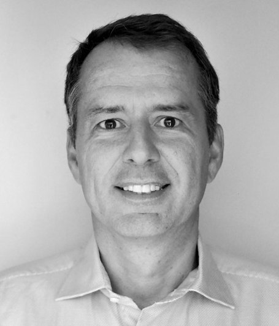
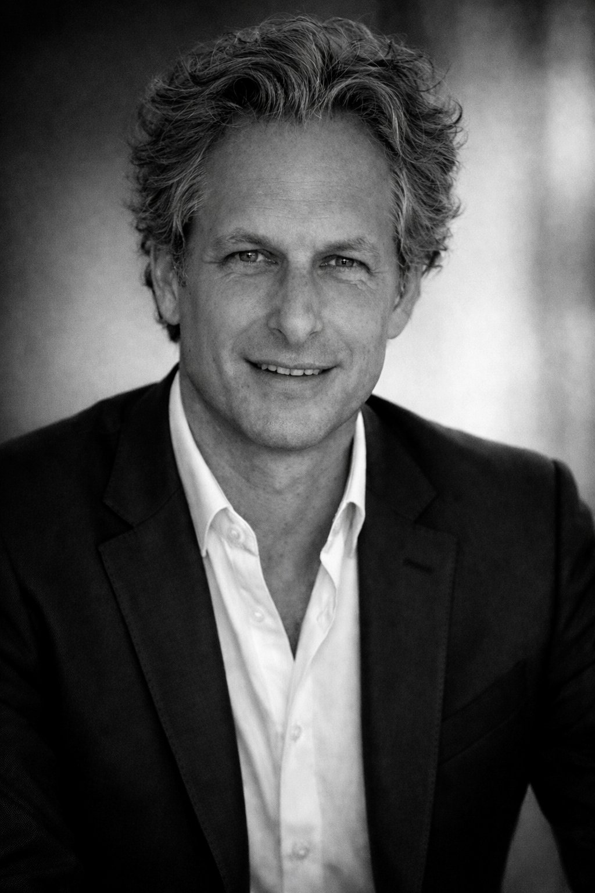
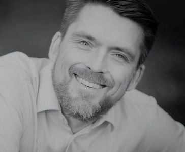
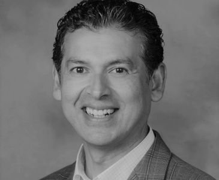

Global perspective. Sector expertise. Disciplined execution.
Green Room Partners is a founder-led investment firm with deep experience across global equity markets and transformative industries. We combine long-term vision with rigorous risk oversight and disciplined capital allocation, supported by a global network of sector advisors that enhances our industry insight and reinforces our commitment to stewardship and independent thinking.
Meet our founder

Christian J. Schmuck
Founder and Portfolio Manager
Christian founded Green Room Partners in San Francisco in 2018. He has over 20 years of global investment
and management experience, including prior leadership at Blackstone, The Gores Group, and Montagu Private Equity.
Background highlights
Experience and Training
Christian previously worked in M&A and Capital Markets at Deutsche Bank in London and held investment banking
and portfolio management roles in New York, San Francisco, and Frankfurt. He holds degrees from Royal Holloway,
University of London and the Frankfurt School of Finance and Management.
Advisory board
Our advisors bring strategic and operating expertise across growth sectors and global markets.

Dr. Pascal Zuta
Brand Advisor
Pascal is a serial entrepreneur and investor based in the San Francisco Bay Area. He co-founded GYANT, an AI-based patient engagement platform, and has built and scaled companies across media, consumer brands, and healthcare technology. He also leads Lion's Den Ventures and serves as an investor and board member at GRENION Brands and Les Lunes. He earned his Dr. in Media Science from the HFF Potsdam-Babelsberg and studied at European Business School.

Dr. Hanno Fichtner
Strategic Advisor
Hanno is an entrepreneur and investor based in San Francisco. He founded Gabi Insurance, the leading U.S. insurance marketplace, raising $39M in venture capital before selling the company to Experian in 2021. Previously, he co-founded HitFox Group, an incubator that launched over 15 companies with 700 employees, and served as Chief Digital Strategy Officer at ProSiebenSat.1 Media. He earned his Dr. rer. pol. from the University of Bremen and his MBA from the University of Cologne.
Stewardship advisors
Selected advisors supporting governance, ethics, and investment principles.
Jeff Heely
Ethics Advisor
Jeff is an investment executive and governance advocate based in the San Francisco Bay Area. He has served as CEO of Baystar Investment Management, COO of Eastbourne Capital (a $3B+ equity long/short fund), and Head of Alternative Investments at Robertson Stephens. A graduate of the United States Naval Academy, he brings a disciplined approach to ethics and stakeholder alignment in investment management.

René Gamboa
Legal Advisor
René is a real estate and corporate partner in the San Francisco office of Gordon Rees Scully Mansukhani. A LEED Accredited Professional (LEED AP), he has worked on environmentally sensitive energy and technology projects, including leading the U.S. launch strategy for a multinational European car company's first all-electric car-sharing business. He earned his J.D. from the University of San Francisco and lives in the San Francisco Bay Area with his wife and two children.